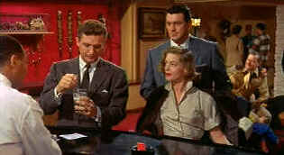

| Written
on the Wind/B,A |
| Criterion/1956/99/ANA 1.77 |
Trashy melodramas work best digging for dirt under the carpets of the
wealthy. Written on the Wind has all the ingredients going for it. Kyle Hadley, the dissolute
Texas oil heir, is truly a disappointment in dear old Dad Jasper Hadley's eyes. Jasper keeps Kyle's
boyhood buddy Mitch Wayne at Kyle's side to clean up his messes. In between the booze bouts, Mitch
is also a crack geologist. Gorgeous, hot and horny drunk bitch sister Marylee Hadley is madly in
love with Mitch, but Mitch can only muster up fraternal feelings.
 |
| Kyle mixes a mean cocktail.
©Universal |
Everything is running along as usual with Hadley binges when a New
York business trip changes everything. Kyle and Mitch meet executive secretary Lucy Moore. Both men
salivate with sexual desire. Kyle
uses uses the big bucks to sweep Lucy into the air and Mitch is left is the wake.
Before you can say holy oil, Lucy is Mrs. Kyle Hadley, Kyle is off
the booze and Mitch has little more to do than fend off the advances of Marylee. It even looks like
Jasper can die a happy pappy.
Something always turns up to spoil perfection. No, it's not Marylee's
tramp grounds nor Mitch's open hunger for Lucy. It's a question of Kyle's manhood. It doesn't take
much to send Kyle back to the bottle. Can Mitch straighten everything out before it's too late?
Will Marylee finally bed her buck of choice? Can Lucy continue doing a delicate dance between two
men?
It's a sudsy script, ripe yet rich. Sirk paces the film very well. It moves from
section to section like so many oil wells springing up in a field. Russell Metty paints the
pictures with deliciously saturated colors.
Rock Hudson is fine, suffering, loyal, upright as Mitch. Only Rock could keep
his hands off the hot Dorothy Malone, playing Marylee with staggering sexuality. Lauren Bacall is
so chilly she almost douses the fire of the other central performances. Robert Stack boozes like a
spoiled rich kid when he doesn't get his way. Stack's callow Kyle is very effective.
Criterion has delivered Written on the Wind in a beautiful
DVD edition. The colors are simply gorgeous. Luminous, Fully saturated reds jump off the screen,
wood grains have a polished sheen. Individual color space is meticulously maintained. Full
resolution is achieved with no apparent softening of the image. Shadow detail is perfectly balanced
preserving the lighting scheme. Blacks are rich as can be. The single channel mono sound is
excellent with lush music and clean dialogue. As a bonus, Criterion includes The
Melodrama Archive, an annotated Douglas Sirk filmography accompanied by numerous photographs.
Trailers for All That
Heaven Allows and Written on the Wind complete the package.
|
|
|
|

Selections from the Feature Archive include articles on
Akira Kurosawa, Blonde Bimbos,
Frank
Darabont, Steven Culp,
John
Herzfeld or Vietnam: The
Hollywood Pariah, and many more....
The Bitch Brigade

A line-up of lean-lipped
actresses who marched through Hollywood in a high heeled goose step armed with razor sharp
dialogue. Click on the image to read all about them.

 Have you visited Home Theater
Talk lately? One of the friendliest places on the Net for Home Theater and DVD discussion, you
can get help for installation problems or simply share your opinions with other Vidiots. Have you visited Home Theater
Talk lately? One of the friendliest places on the Net for Home Theater and DVD discussion, you
can get help for installation problems or simply share your opinions with other Vidiots.

DVD Easter Eggs
How do you take them? Fried or scrambled. Get the secrets
here.

Excellent resource with DVD reviews, forum and more.

The
Movie Poster Archive includes extensive poster images from the films of stars like Susan Hayward,
Kirk Douglas, Katharine Hepburn and many more. Our featured star is Susan Hayward
|